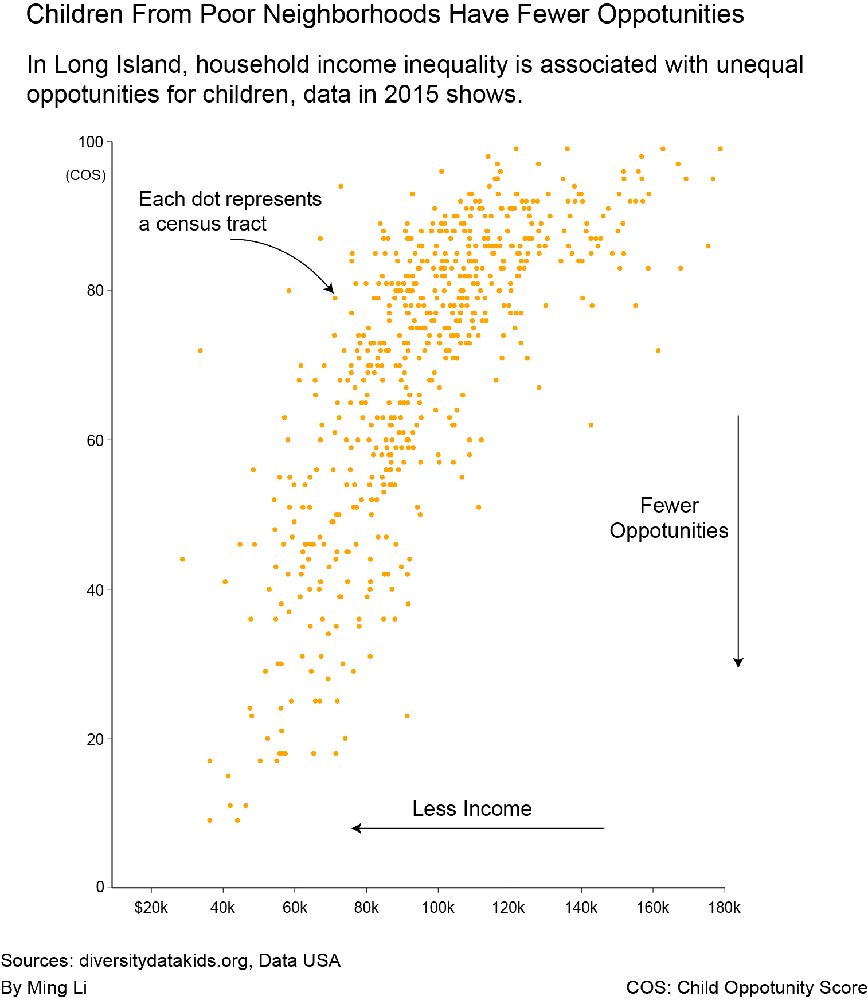

Children from different neighborhoods in Long Island face unequal oppotunity. A Newsday study has found that children from poor neighborhoods have fewer oppotunities.
The chart below shows that the household income is closely associated with the children's "opportunity score". The less income the neighborhood has, the fewer opportunities the children have.
The score is from a study by Brandeis University. The institution compares neighborhood opportunity for children across the United States based on resources and conditions in education, health and environment.
For example, neighborhoods with quality early childhood education and schools, safer housing, more parks and playgrounds are labled with higher opportunity scores for children.
The household income data comes from the Data USA project by MIT and Deloitte. Both data are based on census tracts.

The two maps below show the distributions of income and children's opportunity level in Long Island.
Towns like Hempstead not only
have very low annual household income(less than $50,000), but also have the lowest oppotunity level
for children (the bottom 20% nationally).

Methodology:
* About The Data:
I narrow both the income and Chidren Opportunity Score/Level data to Long Island census tracts. Both of them are measured at the national level so that they are comparable.
* How Did I Make The Graphics:
I used Pandas to build and merge my dataframes. I used seaborn to plot the chart. The two maps were created in Qgis and then I threw everything in Adobe illustrator to make them prettier. I used sawhorse to build the whole page.
* Limitations About The Project:
1. The household income is perhaps one of the underlying indicators of the Children Oppotunity Index itself, so the findings may not be very suprising. In a way, it emphasizes the high correlation between economic status and children's opportunity level.
2. For the map, I tried to categorize Long Island income levels into five categories based on the national standard. However, the "very high", "high" or "low" classification is somewhat subjective.
Details of the data, codes and the original graphics are on the project's Github page.